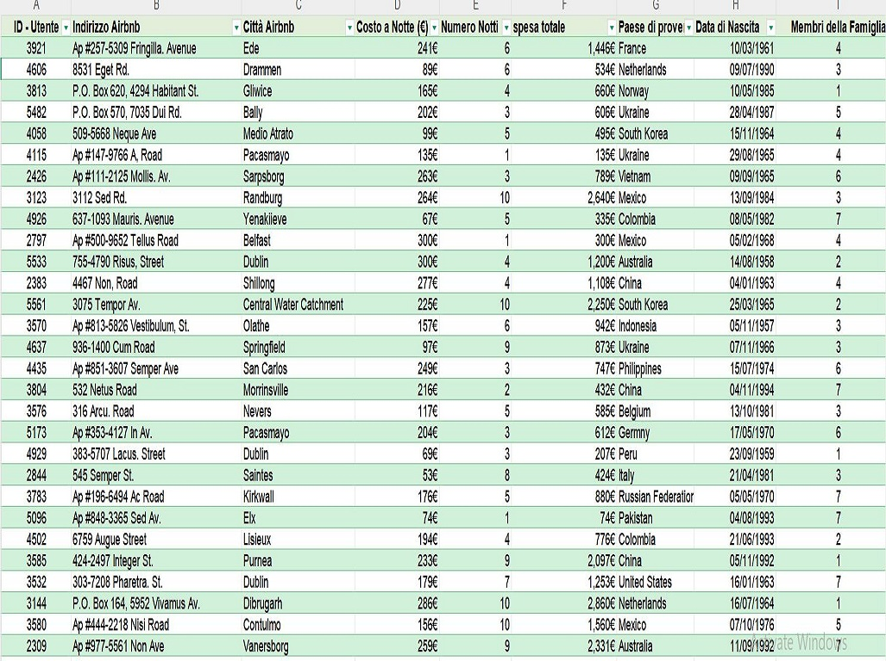
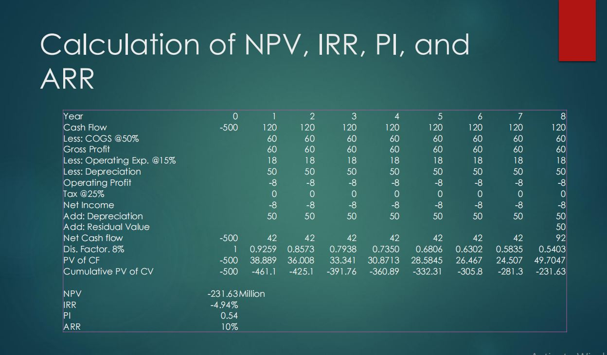
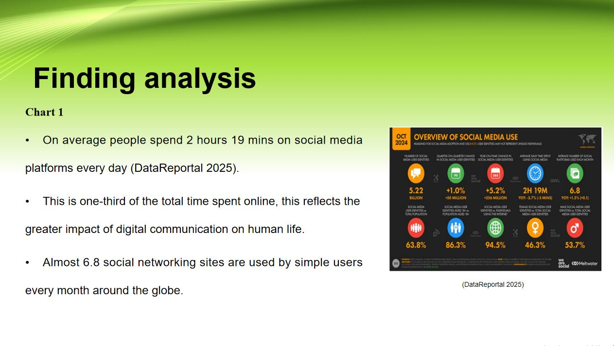
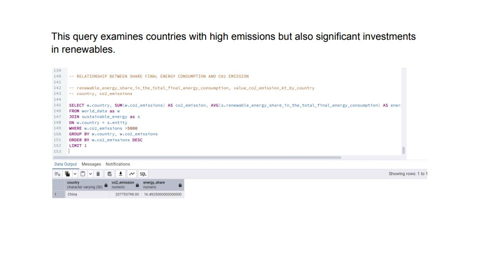
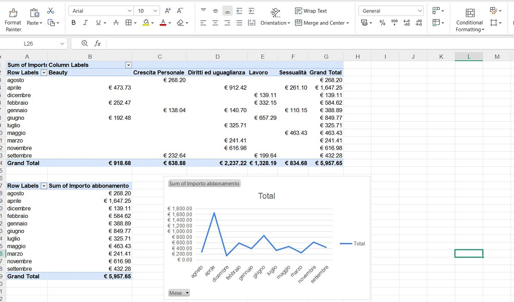
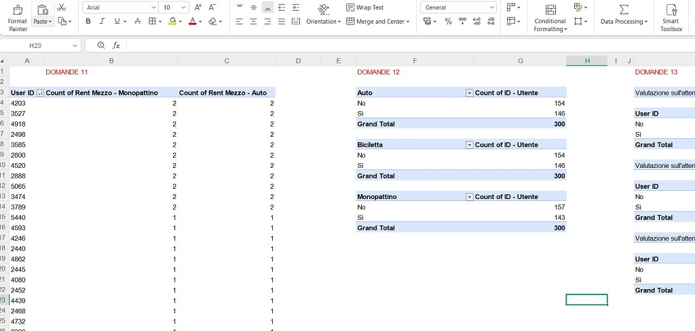

EXCEL
Advanced Excel Data Analysis
Advanced formulas, logic and structured analysis. This project received a perfect score of 500/500 as part of the Start2Impact programme.
View ProjectA selection of projects that demonstrate my approach to data analysis, research and business problem-solving.
Advanced formulas, logic and structured analysis. This project received a perfect score of 500/500 as part of the Start2Impact programme.
View Project
A practical exercise in preparing datasets and applying logical formulas such as IF, COUNTIF, VLOOKUP and XLOOKUP.
View Project
An exploration of economic growth, renewable energy adoption and CO₂ emissions across countries.
View Project
A review of Nike financial performance, revenue, net income and considerations for business expansion.
View Project
A presentation examining global social media usage, user behaviour and time spent across platforms.
View Project
An education-platform analytics project focused on student behaviour, class and teacher performance, engagement trends, learner groups and product success.
Download Project Brief
A SQL-based data analytics project, presented in a downloadable PDF.
View Project
Advanced Excel work demonstrating spreadsheet-based analysis and problem-solving.
View ProjectA project focused on preparing, manipulating and visualizing data to communicate useful insights.
View Project
Python-based analytical work exploring data and developing insights through code.
View Project